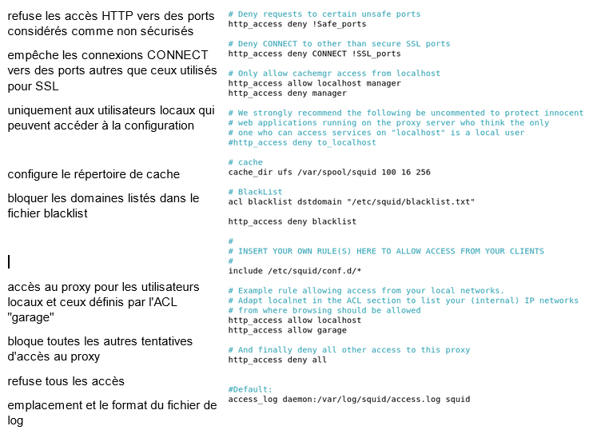
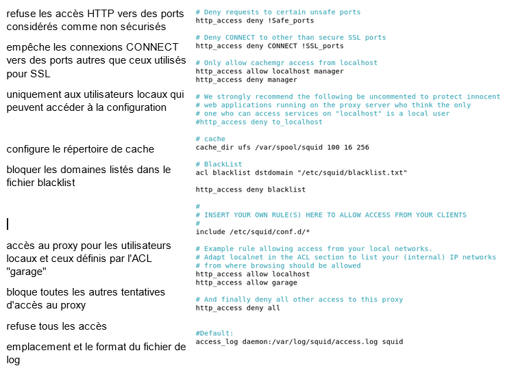

Mise en place du proxy
Configuration
Pour mettre place les sauvagardes il faut tout d'abord un espace de stockage dédié que nous avaons créer en partitionnant
le disque en 2 partie. Puis sur l'active directory nous installons le service de sauvegarde.
Pour cela, on exécute les commandes suivantes :
Nous allons dans le fichier de configuration suivant nano /etc/squid/squid.conf
Puis nous configurons le fichier :


Voici le fichier des sites blacklist :

Puis nous configurons le fichier :

Voici le fichier des sites blacklist :